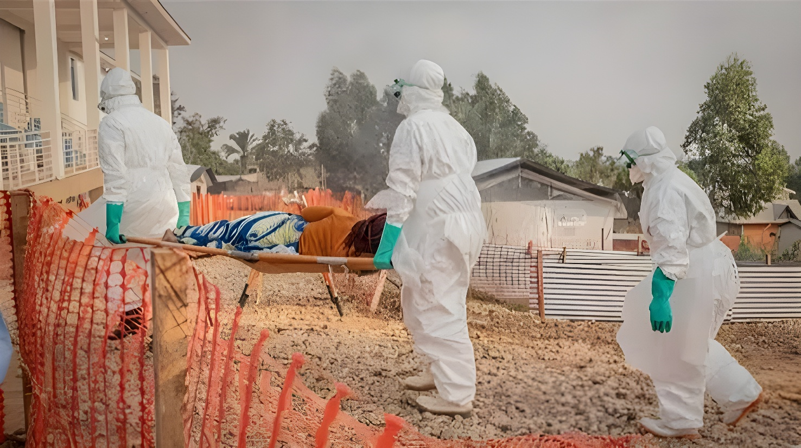

Cent jours après sa déclaration en Ituri, la 17e épidémie d'Ebola que connaît la République démocratique du Congo a franchi, mi-août 2026, un seuil funeste : elle a dépassé le bilan de la flambée de 2018-2020 dans l'est du pays, jusque-là la plus meurtrière de l'histoire nationale. Confirmée par l'Organisation mondiale de la santé, cette bascule s'inscrit dans un contexte explosif — une souche sans vaccin homologué, six provinces touchées, et une riposte qui tente de devancer un virus propagé au cœur d'une région déchirée par la guerre.
Le 17 août 2026, l'Organisation mondiale de la santé a confirmé que l'épidémie d'Ebola en cours en République démocratique du Congo était devenue la plus meurtrière de l'histoire du pays. Selon les données gouvernementales publiées la veille, la flambée avait alors déjà fait 2 325 morts pour 4 945 cas confirmés, en seulement trois mois, dépassant le bilan de la précédente épidémie la plus grave jamais enregistrée en RDC, celle qui avait frappé l'est du pays entre 2018 et 2020 et tué 2 299 personnes sur 3 381 cas.
Déclarée le 15 mai 2026 dans la province de l'Ituri, cette 17e épidémie d'Ebola que connaît la RDC depuis 1976 a éclaté seulement cinq mois après la fin de la précédente flambée. Les premiers cas suspects remontent à fin avril, mais des investigations rétrospectives menées par la Croix-Rouge suggèrent que le virus circulait déjà fin mars dans la zone de santé de Mongbwalu, plusieurs semaines avant sa détection officielle — un retard qui a laissé le temps à l'épidémie de prendre de l'ampleur avant toute riposte structurée.
L'épidémie est causée par le virus Ebola Bundibugyo, une souche rare, identifiée pour la première fois en Ouganda en 2007-2008, et responsable d'un unique autre foyer en RDC en 2012. Sa létalité, estimée entre 25 % et 50 % selon les épisodes passés, s'est révélée particulièrement élevée cette fois : le taux global atteint 47,9 %, mais grimpe jusqu'à 68,6 % dans les zones les plus enclavées du Nord-Kivu, où l'accès aux soins reste extrêmement limité. Aucun vaccin ni traitement spécifique n'est homologué contre cette souche, les outils existants — comme le vaccin Ervebo — ayant été conçus contre le virus Ebola Zaïre, responsable de la majorité des épidémies précédentes.
L'épidémie s'est étendue à six provinces — Ituri, Nord-Kivu, Sud-Kivu, Haut-Uélé, Tshopo et au-delà, jusqu'à des cas exportés à Kampala, en Ouganda — et couvre désormais, selon le coordinateur des Nations unies pour la riposte Julien Harneis, une superficie supérieure à celle de la France. Cette diffusion s'opère dans une région minée par trois décennies de conflits : l'Ituri, le Nord-Kivu et le Sud-Kivu comptent 1,9 million de personnes ayant besoin d'aide humanitaire, tandis que des zones entières échappent au contrôle de l'État, sous l'emprise de groupes armés comme le M23, les ADF ou la CODECO.
L'insécurité complique directement la riposte sanitaire. Le coordinateur onusien faisait état, le 21 août, de plus de 260 attaques contre des personnels de santé recensées en six mois. Des incidents de défiance communautaire ont également émaillé les premières semaines de l'épidémie : incendies de centres de traitement, évasions de patients, refus de remise de corps pour inhumation sécurisée — autant d'obstacles qui ont retardé l'endiguement dans les zones les plus reculées.
L'OMS évalue à 50 millions de dollars le déficit de financement immédiat de sa réponse — 30 millions pour les opérations logistiques, 20 millions pour sécuriser les chaînes d'approvisionnement. Avec 5 665 cas confirmés et environ 2 700 décès au 24 août, cette épidémie est devenue la deuxième plus grande de l'histoire mondiale d'Ebola, derrière celle qui avait frappé l'Afrique de l'Ouest entre 2014 et 2016 et fait plus de 11 300 morts. Les autorités sanitaires américaines ont averti que si la trajectoire actuelle n'était pas inversée d'urgence, cette flambée congolaise pourrait devenir la plus meurtrière jamais enregistrée dans le monde.
| Épidémie | Période | Cas | Décès |
|---|---|---|---|
| Afrique de l'Ouest | 2014–2016 | ~28 600 | > 11 300 |
| Kivu (RDC) | 2018–2020 | 3 381 | 2 299 |
| RDC actuelle | 2026 (en cours) | 5 665 | ~2 700 |
Le virus circule discrètement dans la zone de santé de Mongbwalu (Ituri). Les premiers décès suspects, dont trois volontaires de la Croix-Rouge, ne seront rattachés à Ebola que rétrospectivement.
Le ministère congolais de la Santé déclare officiellement la 17e épidémie d'Ebola du pays, causée par la souche rare Bundibugyo, en Ituri.
L'OMS déclare une urgence de santé publique de portée internationale. Des cas sont confirmés à Goma (Nord-Kivu) et Kampala (Ouganda).
L'épidémie s'étend à cinq provinces et 48 zones de santé. L'Ituri concentre déjà 89 % des cas confirmés et 84 % des décès.
L'OMS confirme que l'épidémie est devenue la plus meurtrière de l'histoire de la RDC, dépassant le bilan de la flambée de 2018-2020.
Le bilan atteint 5 665 cas confirmés et environ 2 700 décès dans six provinces — la deuxième plus grande épidémie d'Ebola de l'histoire mondiale.
« Ebola gagne du terrain. Nous ne pouvons pas laisser le virus prendre le dessus sur notre riposte. »
— Tom Fletcher, chef des affaires humanitaires de l'ONU, août 2026Le franchissement de ce seuil funeste ne marque pas un pic, mais une trajectoire toujours ascendante : l'OMS elle-même n'espère inverser la tendance que d'ici trois mois. Ce qui distingue cette épidémie des précédentes n'est pas seulement l'absence de vaccin homologué contre la souche Bundibugyo, mais le terrain sur lequel elle progresse — une région où la guerre a déjà détruit une grande partie du système de santé et de la confiance envers les autorités. Chaque semaine de retard dans le financement ou l'accès aux zones de conflit se traduit directement en vies perdues. Le pari désormais engagé par la communauté internationale n'est plus seulement sanitaire : il consiste à démontrer qu'une riposte peut encore l'emporter sur un virus, même lorsqu'elle avance sur un champ de bataille.